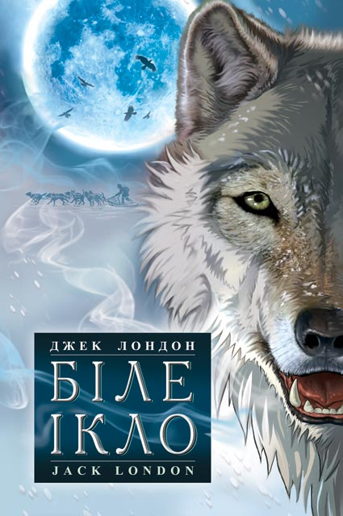

"Джек Лондон Біле Ікло"
"Джек Лондон Біле Ікло"
Вашій увазі представлена одна з найвідоміших повістей Джека Лондона «Біле Ікло». Головною дійовою особою твору є собака - напіввовк по кличці Біле Ікло. У книзі розповідається про нелегку долю чотириногого героя, який жив за часів золотої лихоманки на Алясці. Значна частина книги розповідає про переживання і думки тварини, про сприйняття світу і що відбуваються навколо подій очима самого прирученого вовка. Повною мірою розкриті теми добра і зла, відносин людини до братів менших і наслідків людської жорстокості. ...